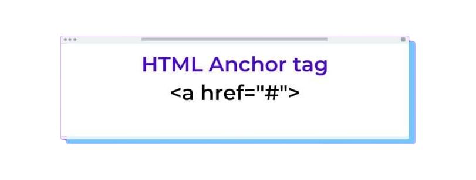

Linki i kotwice w HTML
Linki umożliwiają nam płynne poruszanie się po Internecie, dlatego trzeba wiedzieć w jaki sposób umieszczać linki w swoich dokumentach html.
Znacznik <a>
Jak można było zobaczyć w poprzednich artykułach znacznik <a> sluży do umieszczania hiperłącz do stron internetowych, ale może on także być hiperłączem do elemetnu naszego dokumentu. A jeśli połączymy te dwie funkcje, to możemy dodać link do danego elementu strony internetowej. Budowa znacznika <a> wygląda tak:
<a href="link-lub-kotwica">element widoczny na stronie</a>Rozbijmy to na mniejsze części. W znaczniku <a> znajduje się atrybut href w którym dodajemy nasze hiperłacze, a w jego środku dajemy kontent, który ma być widoczny na stronie.
Znacznik <a> jako hyperlink
Jeśli chcemy użyć znacznika jako hiperłącza musimy w atrybucie href podać link do strony, na którą chcemy przenieść użytkownika. Zawartość znacznika jest dowolna. Do tagu <a> możemy dodać kilka innych atrybutów takich jak np: download, target, czy type. Atrybut download określa, że treść linku zostanie pobrana jeśli użytkownik kliknie na link. target oznacza, gdzie ma otworzyć się link, czy ma to być nowe okno przeglądarki, okno rodzica, okno główne, czy okno o danej określonej nazwie.
<a href="https://github.com/AntekKowalcze/project_tssi" target="_blank" type="html"> link do repozytorium na githubie </a>Efekt:
link do repozytorium na githubie
Znacznik <a> jako kotwica
Kotwice są ważnym elementem coraz popularniejszych stron typu onepage, umożliwiają one nawigację po stronie. Aby utworzyć kotwicę czyli inaczej odnośnik do elementu na naszej stronie używamy znacznik <a> z atrybutem href a w nim # i id elementu, do którego chcemy się odnieść. Ale jak ustawić ID? Bardzo prosto. Na elemencie, do którego chcemy, aby link prowadził wpisujemy atrybut id="nazwa" jednak co ważne id nie może rozpoczynać się cyfrą i nie mogą się w nim znajdować polskie znaki. I wystpuje zasada: jedno id - jeden znacznik.
<header id="id-elementu"></header>
<a href="#id-elementu"></a>A działa to tak:
Kliknij w podkreślony element aby przenieść się do początku strony
kliknij tu
Aby uprzyjemnić korzystanie z tego elementu możemy na znaczniku html ustawić atrybut style="scroll-behavior: smooth;"
Możemy teraz wykorzystać wiedzę i połączyć te dwa elementy, Możemy stworzyć link, który przeniesie nas do wybranego elementu wybranej strony internetowej.
<a href="https://developer.mozilla.org/en-US/docs/Web/HTML#nav-footer" target="_blank">ten link przeniesie cię do stopki strony mozilli</a>link przeniesie cię do stopki strony mozilli